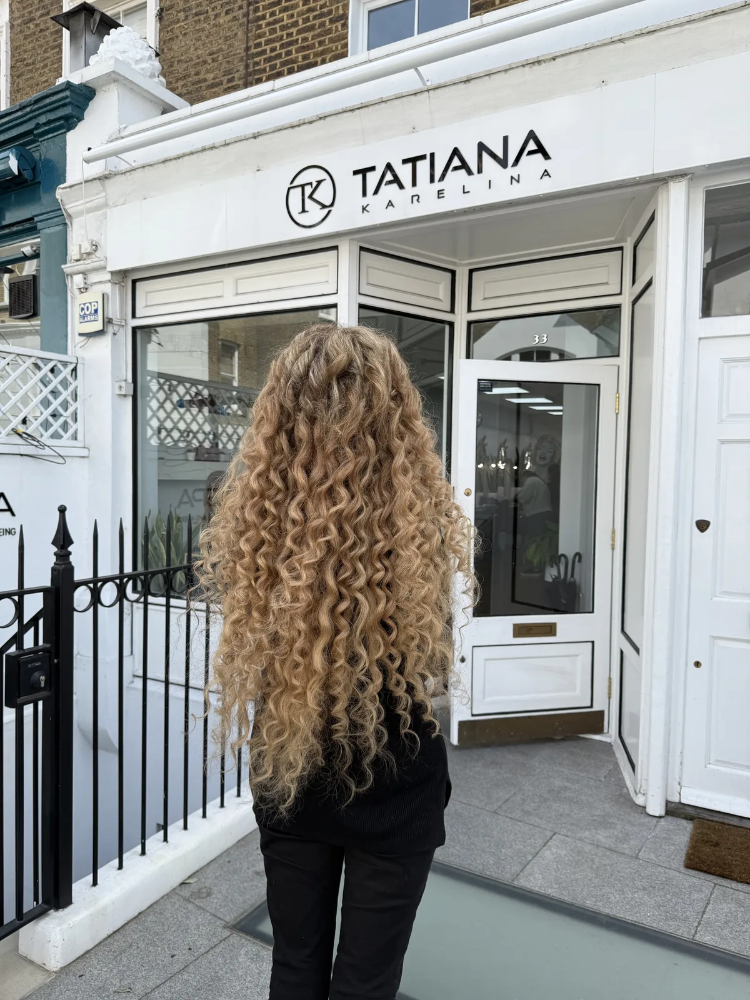

Micro Ring Hair Extensions

Safe, invisible and natural
What Are Micro Ring Hair Extensions?
The micro ring technique is one that we believe to be the best and safest and one that we have mastered. It is the smallest and most undetectable glue free hair extension technique available, combining strands of natural hair with the extension hair using tiny copper rings. As there is no glue, adhesive, or keratin bonds involved, there is no excessive force applied to the scalp during removal, and therefore no damage. Micro rings are the most cost effective attachment system, as they allow 100% of the hair to be reused and can be worn back to back, so you never have to take a break and be without your extensions.
Micro rings are the ideal choice if you want a method that is both long lasting and gentle on your natural hair. They suit women who prefer a system without heat, glue, or adhesives and who want to keep their hair healthy during wear and removal. If you would like extensions that can be reused for up to two years, micro rings offer one of the most cost effective options, and our expert placement ensures the rings remain discreet whether your hair is styled up or down.
- 2 to 3 hoursInstallation time
- From £500Reusable for up to 2 years
- No glue, no heatNatural, discreet, comfortable
- 100% Russian hairColour matched without dye
Our signature approach
What Makes Our Micro Ring Hair Extensions Different?
Achieving the perfect set of micro ring hair extensions is more than simply attaching strands. It calls for the finest hair, precise colour blending, accurate texture matching, and expert placement. We use only genuine Russian hair, valued for its natural softness and ideal texture for Western hair. Our proprietary colour blending process combines strands from several ponytails, personally selected by the client, to create seamless, dye free extensions.
Texture and thickness are carefully matched to the client's natural hair, with our extensive inventory enabling same day consultations and fittings. Finally, six ring sizes in nine colours are expertly placed to ensure comfort, discretion, and balanced weight distribution.

What to expect
The Micro Ring Hair Extension Journey
- First conversationWe discuss your goals and recommend an in salon consultation. If you are ready to proceed, your fitting can often take place the same day, or we can schedule it for a later date.
- Choose your hairAt your fitting you select several ponytails from our Russian hair inventory that match your natural texture and colour.
- BlendingOur blending technician combines strands from each ponytail to create extension strands that perfectly match your natural hair.
- The fittingThe strands are attached with the micro ring technique, placed for comfort, discretion and balanced weight.
- MaintenanceApproximately every 8 to 12 weeks the rings are moved up to account for natural growth, and you leave with what is essentially a brand new set.
Everything you want to know
Frequently Asked Questions
What makes Tatiana Karelina the best for micro ring hair extensions in London and Manchester?
Tatiana Karelina introduced the micro ring technique to the UK nearly two decades ago and continues to refine it. The method uses no heat or glue and relies on precise tension control to protect natural hair. Russian hair is hand blended to match your colour and texture, and rings are placed to distribute weight evenly for long lasting comfort. With one of the UK's largest stocks of Russian hair, same day fittings where suitable and transparent pricing, Tatiana Karelina remains the best and most experienced provider of micro ring extensions.
When should I choose micro ring hair extensions?
Micro ring extensions are best if you want a long lasting method that is gentle on your natural hair. They use no heat, glue, or chemicals, making them one of the safest attachment systems available. Because the Russian hair we use can be re used for up to two years, micro rings are also a highly cost effective choice.
How long does my hair need to be for micro ring extensions?
For micro ring hair extensions to be fitted safely and blend naturally, your hair should be at least 2 to 3 inches long for adding volume and 3 to 4 inches long for adding length. This ensures there is enough natural hair for the rings to hold securely while remaining discreet. During your consultation, our stylists will assess your hair and advise if micro rings are the right option.
How do you match extension hair to natural hair?
A perfect match requires both colour and texture. We achieve this by blending multiple Russian ponytails into strands that mirror your natural hair shade, rather than relying on dye. Texture is just as important. We stock all six natural textures, fine, straight, wavy, coarse, frizzy, and curly, so your extensions move exactly like your own hair.
Will my micro ring extensions be noticeable?
With us, micro rings are placed with precision, so they remain invisible, whether you wear your hair up or down. We use six different ring sizes in nine colours, carefully matched to your natural shade. Tiny rings are used at the hairline, smaller ones at the sides, and standard rings at the back. With regular maintenance, your extensions will stay discreet and comfortable.
Will micro ring extensions damage my hair?
No. Micro rings do not use glue, adhesive, or heat, which means they can be removed without pulling or breaking your natural hair. Healthy hair is incredibly strong, stretching up to 20% of its length when dry and up to 50% when wet before breaking. With proper application and gentle handling, micro rings will not damage your natural hair.
How long do micro ring hair extensions last?
Micro ring extensions last up to 3 months before they need to be moved up as your natural hair grows. The Russian hair itself can be reused for 2 years or more with proper care, making this one of the most cost effective hair extension methods. At each maintenance visit, the rings are removed and refitted, leaving you with what feels like a brand new set.
What are the benefits of micro ring extensions with you?
Our micro ring hair extensions are reusable time and again, require no glue or heat to apply, and are easy to remove. They last up to 3 months per fitting and can be refitted repeatedly, meaning you never need to take breaks. Many clients even find that wearing our extensions helps their natural hair grow healthier, as it is protected from daily heat and styling.
Can I style my hair normally with micro rings?
Yes, you can wash, straighten, curl, and style your hair as usual. The only restriction is avoiding excessive pulling or applying heavy oils at the root, as this can loosen the rings. Otherwise, you can treat your hair extensions just like your own, enjoying the extra length and volume in any style you choose.
How often will I need maintenance?
We recommend maintenance appointments every 8 to 12 weeks. During these visits, the rings are repositioned to account for natural hair growth, keeping your extensions secure and discreet. Maintenance also ensures your hair remains healthy and prevents the rings from becoming visible as they move down.
Can I reuse my hair extensions with micro rings?
Yes, this is one of the key advantages. Unlike salons that use pre tipped Asian or Indian hair that cannot be reused, with us your Russian hair can be refitted time and again. The hair itself can last for years, giving you excellent value and making micro rings one of the most sustainable extension options.
Can I combine micro ring hair extensions and micro bond hair extensions?
Yes. For some clients, a combination of both methods gives the best result. Micro rings work particularly well at the back of the head where volume and length are the focus, while micro bonds are ideal for finer areas around the hairline or lower at the nape, where discreet placement is important. By blending the two methods, we can achieve a flawless, natural finish that feels comfortable and looks seamless from every angle.
Hair You Will Forget Is Not Your Own
Book a consultation in London or Manchester and see and feel the Russian hair for yourself. With one of the largest inventories in the UK, your fitting can often happen the same day.
Book Consultation